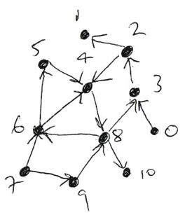

Exercises
Exercises#
Solution to Exercise 3.1
1.
The connected components are \([1, 2, 4, 7]\), \([0, 5, 6]\) and \([3]\).
# 2.
def bfs(adj, i):
visited = [i]
frontier = [i]
while len(frontier) > 0:
next = frontier
frontier = []
for j in next:
neighbours = adj[j]
for k in neighbours:
if not k in visited:
frontier.append(k)
visited.append(k)
return visited
g = [[5, 6], [7], [7], [], [7], [0, 6], [0, 5], [1, 2, 4]]
for i in range(len(g)):
print(bfs(g, i))
# 3.
import numpy as np
def path_distances(adj, i):
visited = [i]
frontier = [i]
distances = np.zeros(len(adj))
distances[:] = -1
distances[i] = 0
d = 0
while len(frontier) > 0:
d += 1
next = frontier
frontier = []
for j in next:
neighbours = adj[j]
for k in neighbours:
if not k in visited:
frontier.append(k)
visited.append(k)
distances[k] = d
return distances
n = len(g)
d = np.zeros((n,n))
for i in range(n):
d[i,:] = path_distances(g, i)
print(d)
[0, 5, 6]
[1, 7, 2, 4]
[2, 7, 1, 4]
[3]
[4, 7, 1, 2]
[5, 0, 6]
[6, 0, 5]
[7, 1, 2, 4]
[[ 0. -1. -1. -1. -1. 1. 1. -1.]
[-1. 0. 2. -1. 2. -1. -1. 1.]
[-1. 2. 0. -1. 2. -1. -1. 1.]
[-1. -1. -1. 0. -1. -1. -1. -1.]
[-1. 2. 2. -1. 0. -1. -1. 1.]
[ 1. -1. -1. -1. -1. 0. 1. -1.]
[ 1. -1. -1. -1. -1. 1. 0. -1.]
[-1. 1. 1. -1. 1. -1. -1. 0.]]
Solution to Exercise 3.2
# 1.
g = [[3], [], [1, 4], [2], [8], [4], [4, 5], [6, 9], [3, 6, 10], [8], []]
# 2.
def print_length_2_walks(adj, i):
for j in adj[i]:
for k in adj[j]:
print(i, j, k)
print("length 2 walks:")
print_length_2_walks(g, 8)
# 3.
def print_length_2_paths(adj, i):
for j in adj[i]:
if i != j:
for k in adj[j]:
if i!=k and j!= k:
print(i, j, k)
print("length 2 paths:")
print_length_2_paths(g, 8)
length 2 walks:
8 3 2
8 6 4
8 6 5
length 2 paths:
8 3 2
8 6 4
8 6 5
1. Determine the adjacency list of the directed graph below.

2. Write a function print_length_3_walks(adj, i) which prints out all length 2 walks starting from node i. Test that it produces the correct output for node 6:
>>> print_length_3_walks(adj, 6)
6 5 4 8
6 4 8 6
6 4 8 3
6 4 8 10
3. Write a function print_length_3_paths(adj, i) which prints out all length 2 paths starting from node i.
4. Under what circumstances do the two functions produce different results?
The reverse of a directed graph is is the graph formed by reversing the directions of its edges.
https://en.wikipedia.org/wiki/Transpose_graph
1. Sketch the reverse of the directed graph of the egg-laying circuit and write down its adjacency list.
2. Write a function reverse(adj) which reverses the adjacency list adj. That is, if adj is the adjacency list of a directed graph, then reverse(adj) is the adjacency list of the reverse graph.
3. Check that your function correctly reverses the adjacency list of the egg-laying circuit.